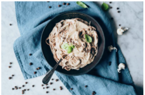

Pasta de Coliflor y Pimienta de Jamaica
17 noviembre, 2024
Una salsa vegana cremosa a base de coliflor con un toque especial de pimienta de Jamaica. ¡Te encantará!
Ingredientes
- 1 coliflor grande, cortada en floretes
- 200 gramos de pasta (fettuccine o espagueti)
- 2 cucharaditas de pimienta de Jamaica molida
- 3 dientes de ajo, picados
- 2 cucharadas de aceite de oliva
- Sal al gusto
- Perejil fresco picado (opcional)
- Queso parmesano rallado (opcional)
Tiempo de Preparación
Tiempo total: 30 minutos
Preparación: 10 minutos | Cocción: 20 minutos
Instrucciones
- Cocina la pasta en una olla grande con agua con sal, siguiendo las instrucciones del paquete. Escúrrela y resérvala.
- Calienta el aceite de oliva en una sartén grande a fuego medio. Añade los ajos picados y saltea hasta que estén dorados.
- Agrega la coliflor y cocina durante 10-12 minutos, removiendo ocasionalmente, hasta que esté tierna.
- Añade la pimienta de Jamaica y mezcla bien. Ajusta la sal al gusto.
- Incorpora la pasta cocida en la sartén y mezcla con la coliflor. Sirve caliente con perejil fresco y queso parmesano si lo deseas.
Galería de Imágenes